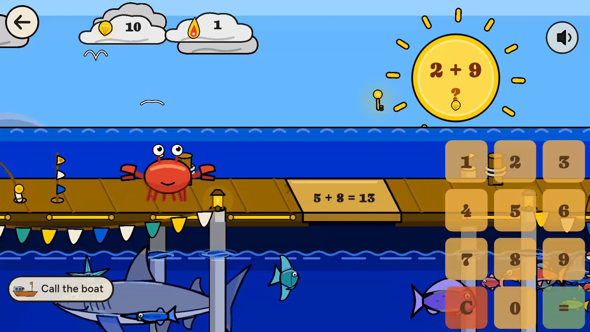
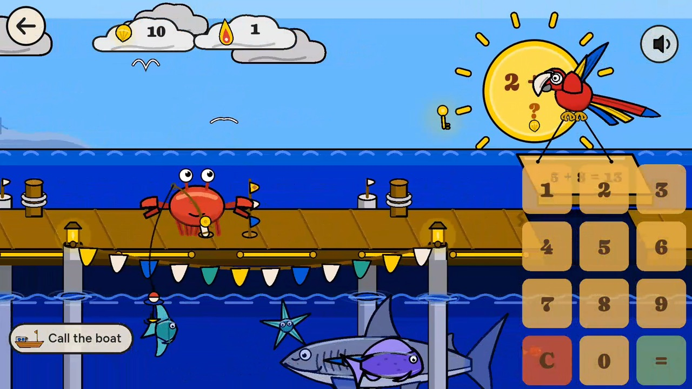
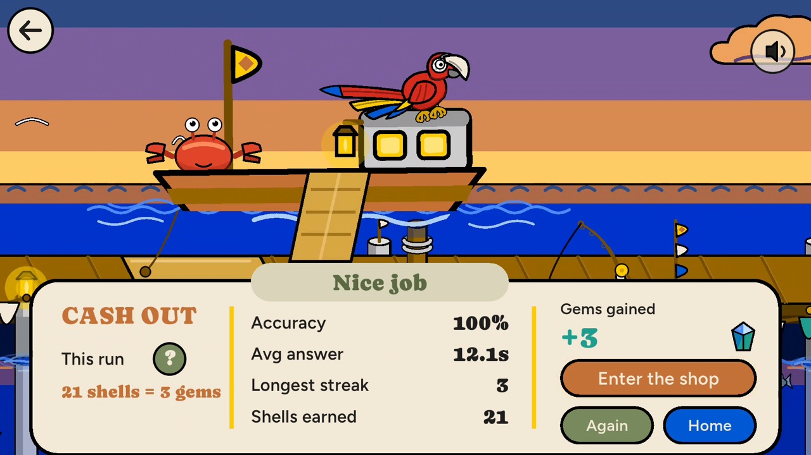
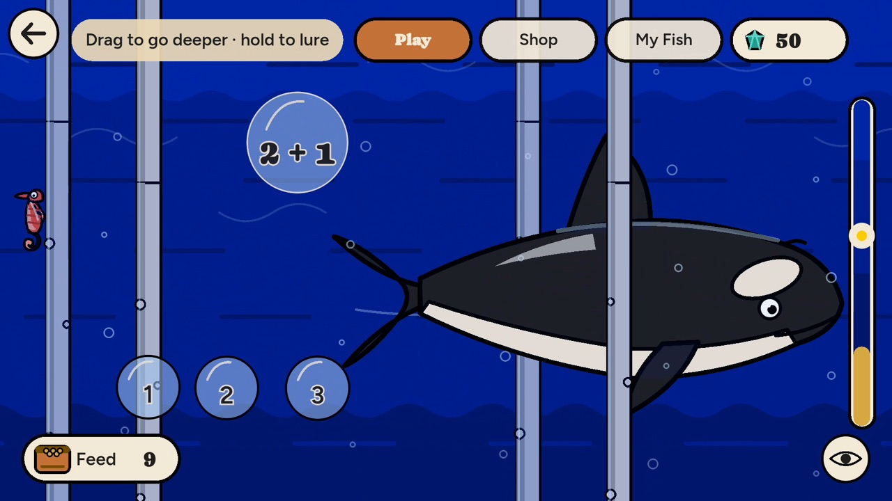
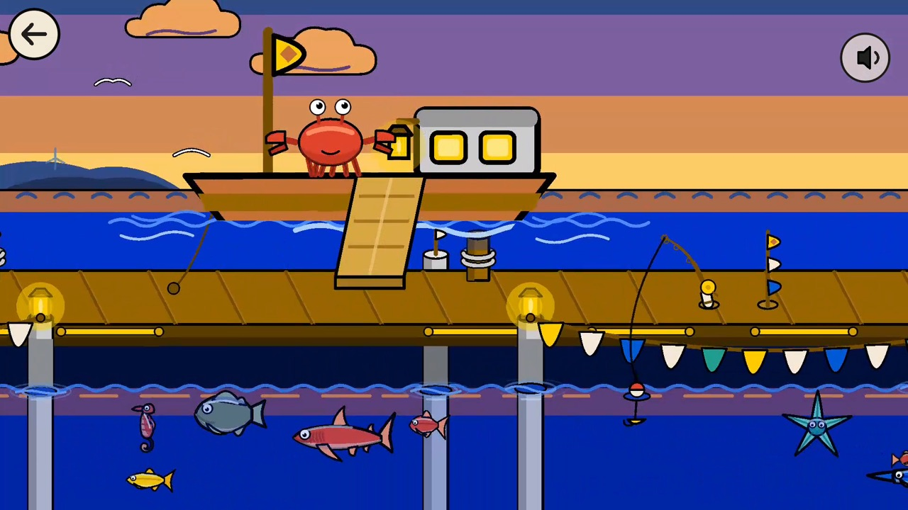
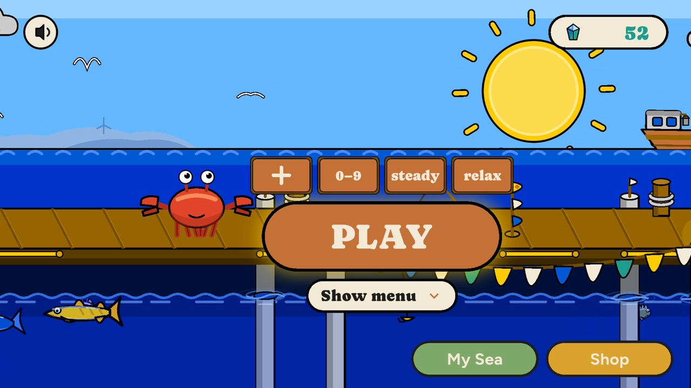

Apps
Crab Math Run
No ads, no accounts, nothing collected.
Math practice built to keep kids playing. A crab walks a pier over the sea, and the math problem rides inside the sun. Answer it and the parrot flies a plank across the gap.
No ads. Nothing collected.
- No accounts, no sign-in, and nothing is collected. Progress stays on the device.
- One purchase. No in-app purchases, no ads, no subscriptions.
- Plays without an internet connection.
Read the privacy policy for Crab Math Run.
What a run looks like






You pick the math
- Addition, subtraction, multiplication and division: one sign, plus and minus, times and divide, or all four.
- Three levels: numbers 0 to 4, 0 to 9, and 0 to 12.
- A custom range anywhere from 0 to 20, or one number to drill, like the sevens.
- Four speeds, from 15 seconds a problem down to 4.
- Type the answer on a keypad, or pick from four choices.
- Every fact in the range comes up once before any repeats.
A wrong answer doesn't end the run
In Safe mode, the default, a missed problem still gets its plank, with the whole fact written on it, and the hero never falls.
Splash mode is there for players who want stakes: the boards run out, the hero goes in, and the boat pulls him out with a rope ladder every time.
Crab Math Run never ends a run on a miss in its default mode, because a kid who is afraid of being wrong can stop trying.
Ways to play
- Timed runs of 1, 2 or 5 minutes.
- Relax, with no clock: the boat comes the moment you call it.
- Flash cards for pure study, with the answer on the back.
- Every fact you miss is kept in one list, and two right answers in a row take it off.
Spend the gems you earn
Gems come only from right answers, and they cannot be bought.
They dress the pier and the seabed: 11 things for the pier, 10 for the sand, flags for the boat, snails, and food for the fish.
Thirteen kinds of sea life join your water as your gems add up.
Pick your hero: a crab, an octopus or a snail.
For parents and teachers
- Every run ends with a summary: accuracy, average answer time, longest streak, and what was earned.
- The Records book keeps a page for every kind of run.
Where it runs
iPhone, iPad, Android, Kindle Fire. iPhone and iPad need iOS 15.0 or later.